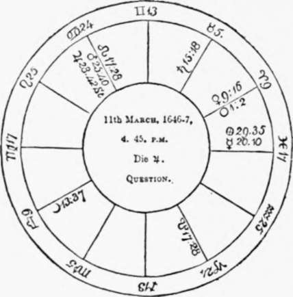
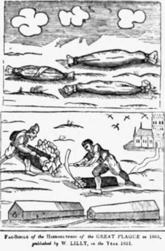
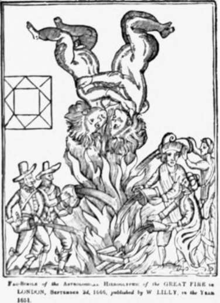

Evidence Relied Upon
Description
This section is from the book "Faith - Healing. Christian Science And Kindred Phenomena", by James Monroe Buckley. Also available from Amazon: Faith-Healing, Christian Science and Kindred Phenomena.
Evidence Relied Upon
To demonstrate the truth of astrology, its votaries appeal to the history of England for the past six hundred years. Aries is the principal sign influencing England. Saturn is a malefic planet, and they assign various coincidences of misfortune to England during the times Saturn was in Aries, of which I give a few. In 1290, the desperate war with the Scots was waged by Edward I. and the English army defeated at Roslin, near Edinburgh; in 1378, the rebellion by Wat Tyler; in 1555, Queen Mary's time, 277 persons burned at the stake; in 1643, civil war between Charles I. and Parliament. The whole list is remarkable.
1. Lilly, "Introduction to Astrology," p. 29.
On the other hand, in 896 Jupiter was in Aries, and King Alfred beat the Danes; in 1215 King John signed the Magna Charta; in 1856 peace was signed between the allies, and the Crimean war ended; in 1868 the tide of prosperity set in.
An important incident is related to the United States. Gemini rules the United States and also the west of England. The rebellion of the American colonies coincided with the transit of Uranus through the sign Gemini; and on the very next occasion, as the "Science of the Stars" points out, when the same planet passed through the same sign, 1859 to 1866, the American civil war waged four years. During the same time the west of England suffered fearfully from the cotton famine, nearly a million people being in a state of semi-starvation.
Of the eclipses in their relation to Mundane Astrology the following illustrations may serve: On April 10, 1865, there occurred a partial eclipse of the moon at Washington; Jupiter was in the ascendant in Sagittarius, and about that time General Lee surrendered to General Grant. They make the point also upon the death of President Garfield, that in the mid-heavens of his horoscope the comet B appeared, and that this same comet was seen in the second decanate of Gemini on the 22d of May, and on the 2d of July, 1881, Garfield was shot.
Another class of coincidences is striking. It is claimed by astrology that mental disease is likely to occur when Mars and Saturn—to which modern research has added Uranus—are at birth in conjunction, quadrature, or opposition with Mercury and the moon, but Mercury more particularly. The " Science of the Stars," from which we take some of these coincidences (quoted by it from another work), says: "It is by no means asserted that insanity always or even often occurs with such opposition; what is asserted is, that it rarely occurs without it." This proposition should be scrutinized, for it contains a serious if not fatal weakness.
There are nine great princes notoriously insane or deficient in intellect, upon whose birth Mercury or the moon, or both, will be found to have been afflicted by Mars, Saturn, or Uranus. These are: Paul of Russia, George III. of England, Gustavus IV. of Sweden, Ferdinand II. of Austria, Maria of Portugal, Charlotte, Empress of Mexico, Charles II. of Spain, Murad V. of Turkey, and Constantino of Russia. Six persons of genius, born under the same configuration — Gerard de Nerval; Alfred Rethel, the painter of "Der Tod als Freund"; Agnes Bury, the actress; Julien; Paul Morphy, the chess-player; and Pugin — became insane. Four distinguished men who lost their faculties in old age are also given — Swift, Southey, Moore, and Faraday. The histories of the Bourbon family, as derived from documents now in the British Museum, agree with the state of the heavens at the time of their births, according to the theories of astrology; their misfortunes, insanity, violent deaths, etc., are too well known to need recapitulation. Many coincidences between the aspect of the heavens at her birth and the events of her career are found in the life of Queen Victoria.
Lilly predicted, it is claimed, in 1651 the Great Plague which occurred in London in 1665. The accompanying is a facsimile of the hieroglyphic of the Great Plague.
This hieroglyphic, as explained by Zadkiel, signifies a great mortality, in which the vast number of deaths should so far exceed the supply of coffins that tho dead should bo buried in their shrouds, or merely stitched up in sheets, as therein rudely represented.
Lilly also predicted, in the same year, by means of an astrological hieroglyphic, the Great Fire in London, which took place September 3, 1666.
Zadkiel says that the hieroglyphic forecasting the Great Fire may be understood by tho horoscope being introduced therein, and tho twins are intended to represent tho sign Gemini, which in astrology is known to rule London, and the twins are, therefore, intended to denote that city. Their falling headlong into the fire signifies the extensive injury to be done to London by that (dement fifteen years afterward.
The astrologers made a great deal out of these hieroglyphics, Zadkiel affirming that if there had been only these, whereas there were several others equally pointing out future events published with them, they would ever remain undeniable monuments of the author's skill and of the substantial truth of the science of astrology.
Americans cannot but be struck by a recent extraordinary coincidence. In Zadkiel's Almanac for 188G occurs the following prediction:
Shocks of earthquake in the 77th degree of west longitude may be looked for. Great thunder-storms and waves of intense heat will pass over the States. There will be great excitement in America.
What are the facts ? The terrific shocks of earthquake which visited Charleston, S. C, Washington, Richmond, Augusta, Raleigh, etc., on the night of August 31, many lives being lost, took place in longitude 76 to 78 degrees west. Waves of intense heat passed over the States in July and August, the thermometer in the middle of the latter month in St. Louis rising to 104 in the shade. Coincidences more or less striking can be multiplied indefinitely, and it was by observing them that the system of astrology was constructed.
Continue to: